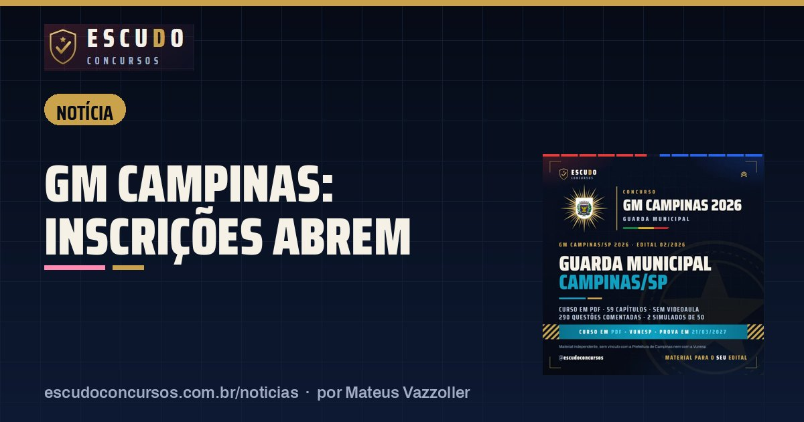

GM Campinas: inscrições e pedido de isenção abrem quarta, 25/11, às 10h
NotíciaPublicado em 24 de novembro de 2026 · por Mateus Vazzoller, ESCUDO Concursos

As inscrições para o concurso da Guarda Municipal de Campinas abrem nesta quarta-feira, 25/11/2026, às 10h, na página da Vunesp para o concurso (www.vunesp.com.br/PCAM2602). No mesmo horário começa o pedido de isenção da taxa, que só vai até as 23h59 de 02/12/2026. Quem não pede isenção tem até as 23h59 de 08/01/2027 para se inscrever e paga R$ 67,90 até 11/01/2027. São 100 vagas para Guarda Municipal 3ª Classe, com vencimento-base de R$ 3.796,61.
| Órgão | Prefeitura de Campinas/SP, Guarda Municipal 3ª Classe |
|---|---|
| Banca | Fundação Vunesp (Edital nº 02/2026) |
| Vagas e salário | 100 vagas, vencimento-base de R$ 3.796,61 |
| Pedido de isenção | 10h de 25/11 até 23h59 de 02/12/2026 |
| Inscrições | 10h de 25/11/2026 até 23h59 de 08/01/2027; taxa de R$ 67,90 paga até 11/01/2027 |
| Prova objetiva | 21/03/2027, à tarde (prevista) |
Quem pode pedir isenção da taxa?
O Capítulo V do Edital nº 02/2026 aceita só dois casos, e nos dois a isenção é total:
| Situação | Como comprovar |
|---|---|
| Família de baixa renda inscrita no CadÚnico (Lei Complementar Municipal nº 576/2026) | Informar o NIS no requerimento; a Vunesp confere com o órgão gestor do CadÚnico |
| Doador de medula óssea cadastrado no REDOME (Lei Municipal nº 15.792/2019) | Enviar o comprovante do cadastro pela Área do Candidato, em "Envio de Documentos" |
O documento do REDOME vai digitalizado, com até 2 MB por arquivo, em PDF, PNG, JPG ou JPEG. Documento ilegível ou rasurado não é avaliado, e o pedido cai. O comprovante do requerimento precisa ser impresso até as 23h59 de 02/12. Depois desse horário, o requerimento de isenção sai do ar.
E se a isenção for negada?
A inscrição não se perde. O edital traz o caminho até o boleto:
| Etapa | Data |
|---|---|
| Pedido de isenção | 10h de 25/11 até 23h59 de 02/12/2026 |
| Resultado do pedido, na Área do Candidato | A partir das 10h de 16/12/2026 |
| Recurso contra o indeferimento | 17 e 18/12/2026 |
| Resultado dos recursos | 10h de 04/01/2027 (previsto) |
| Fim das inscrições | 23h59 de 08/01/2027 |
| Último dia para pagar o boleto | 11/01/2027, com reimpressão até as 18h |
Quem tem o pedido deferido fica com a inscrição feita automaticamente. Quem tem o pedido negado volta à Área do Candidato, imprime o boleto e paga até 11/01/2027. Sem o pagamento, a inscrição não vale.
Quem pode se inscrever para a Guarda de Campinas?
O cargo pede ensino médio completo, CNH categoria B no mínimo e idade de 18 a 35 anos, contada no último dia de inscrição, 08/01/2027. A altura mínima é de 1,60 m para homens e 1,55 m para mulheres, conferida no Exame Antropométrico antes do TAF. O guarda nomeado trabalha na Secretaria Municipal de Cooperação nos Assuntos de Segurança Pública, com presença ostensiva nas ruas, proteção dos bens e serviços públicos municipais e mediação de conflitos, numa jornada que pode chegar a 180 horas mensais em escala.
As 100 vagas se dividem em 50 de ampla concorrência, 15 para mulheres, 25 para pessoas pretas ou pardas, 5 para pessoas com deficiência, 3 para indígenas e 2 para quilombolas. A opção pela cota de pessoas pretas ou pardas é feita na ficha de inscrição e só pode ser mudada até o fim das inscrições; depois disso, não há como entrar na cota ou sair dela.
O que estudar a partir de agora?
A prova objetiva está prevista para 21/03/2027, à tarde, com 50 questões e mínimo de 25 acertos. São 30 questões de Conhecimentos Específicos: leis recortadas artigo por artigo (Estatuto das Guardas, ECA, Código Penal, CPP, Lei Maria da Penha, Abuso de Autoridade e outras) e um bloco sobre Campinas, com zonas, distritos, a Região Metropolitana e os próprios públicos da cidade. Quem se inscreve agora tem quase quatro meses: dá para fechar as leis com calma e ainda começar o treino físico, porque o TAF vem em junho de 2027 e é o primeiro critério de desempate. O programa completo, matéria por matéria, está no guia do concurso GM Campinas.
Curso ESCUDO Guarda Municipal de Campinas em PDF: 59 capítulos e 290 questões, de acordo com o edital aberto, 2 simulados de 50 questões. De R$ 47 por R$ 37 com o cupom GMC37 até 31/12/2026.
Ver o curso
Perguntas frequentes
Quando abrem as inscrições da Guarda Municipal de Campinas?
Na quarta-feira, 25/11/2026, às 10h, no site da Vunesp, e vão até as 23h59 de 08/01/2027.
Até quando posso pedir isenção da taxa da GM Campinas?
Até as 23h59 de 02/12/2026. Só têm direito os inscritos no CadÚnico de família de baixa renda e os doadores de medula óssea cadastrados no REDOME.
Qual é o valor da inscrição?
R$ 67,90, pago por boleto até 11/01/2027.
Leia também
- NotíciaTRT-4 Técnico Judiciário: inscrições encerradas; vagas reservadas saem em 10/12 e a prova é em 31/01/2027
23 de novembro de 2026 · Concurso TRT-4 (RS): inscrições para Técnico Judiciário encerradas. Vagas reservadas e pedidos especiais saem em 10/12, convocação em 11/01 e prova em 31/01/2027.
- NotíciaIBGE Recenseador: inscrições encerradas; taxa vence sexta, 27/11, e isenção sai em 30/11
23 de novembro de 2026 · Inscrições do IBGE Recenseador encerradas: pague a taxa de R$ 70,00 até 27/11/2026, veja a isenção em 30/11 e as inscrições deferidas em 14/12.
- NotíciaBanestes Técnico Bancário: inscrições terminam segunda-feira, 23/11, às 23h59, e o boleto vence na terça, 24/11
21 de novembro de 2026 · Concurso Banestes: inscrições para Técnico Bancário terminam em 23/11/2026, às 23h59, na FCC. Boleto de R$ 67,00 gerado até as 22h e pago até 24/11.
Guia completo do concurso: edital, vagas e o que cai · Mais notícias e dicas de concursos